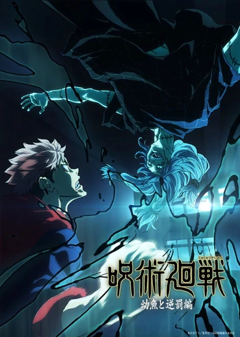

Arcos de Jujutsu Kaisen
Criança Amaldiçoada
Filme: Jujutsu Kaisen 0
Mangá: 0 ao 4 – (capítulos)
Feto Amaldiçoado
Anime: 1 ao 8 – (episódios)
Mangá: 1 ao 18 – (capítulos)
Arco vs Mahito
Anime: 9 ao 13 – (episódios)
Mangá: 19 ao 31 – (capítulos)
Festival de Intercâmbio
Anime: 14 ao 21 – (episódios)
Mangá: 32 ao 54 – (capítulos)
Pintura da Morte
Anime: 22 ao 30 – (episódios)
Mangá: 55 ao 64 – (capítulos)
Passado do Gojo
Anime: 25 ao 29 – (episódios)
Mangá: 65 ao 79 – (capítulos)

Incidente de Shibuya
Anime: 30 ao 47 – (episódios) – encerramento do anime
Mangá: 79 ao 136 – (capítulos)